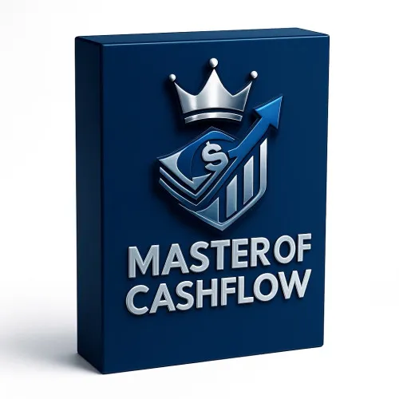
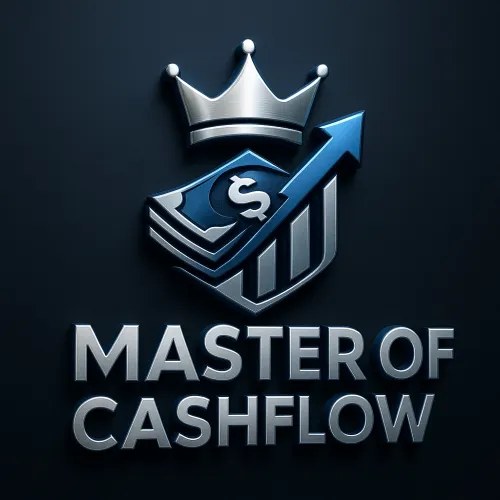

Master Of Cashflow
Produktprofil · Marktplatz-Daten 2026-10-14 · Verkaufsseiten-Recherche 2026-10-14 · Kategorien: Marketing Services
- Master Of Cashflow ist ein/e Online-Coaching in Marketing Services, vertrieben über den Digistore24-Marktplatz von Anbieter Tim_Ecommerce, gelistet seit 2025-06-29.
- Listenpreis $1410.25 (single payment, installment) — Checkout, Auslieferung und Rückerstattungen laufen über Digistore24 selbst, nicht über den Anbieter.
- Käuferschutz: keine standardisierte Garantie-Formulierung gefunden — Rückerstattungsbedingungen vor der Zahlung auf der offiziellen Seite prüfen.
Interesse an Master Of Cashflow? Aktueller Preis, Boni und Garantiebedingungen finden Sie auf der offiziellen Seite des Anbieters:
Offizielle Verkaufsseite ansehen
Affiliate-Link (Werbung) — wir verdienen ggf. eine Provision, ohne Mehrkosten für Sie.

Marktplatz-Daten
| Produkttyp | Online-Coaching |
|---|---|
| Preis | $1410.25 (Single payment, Installment) |
| Garantie/Rückgabe | Laut Verkaufsseite des Anbieters — vor dem Kauf auf der offiziellen Seite prüfen |
| Anbieter | Tim_Ecommerce (gelistet seit 2025-06-29) |
Marktplatz-Beschreibung des Anbieters
Master-Affiliate: Verdiene echtes Geld online! Du willst lernen , wie du online Geld verdienen kannst, ohne eigene Produkte zu erstellen? Dann ist dieses Coaching genau richtig für dich! In meinem Affiliate-Marketing-Coaching zeige ich dir Schritt für Schritt: Wie du passives Einkommen mit Affiliate-Programmen aufbaust Welche Strategien wirklich funktionieren, um Produkte erfolgreich zu bewerben Wie du Zielgruppen erreichst, die tatsächlich kaufen Praktische Tipps zu Landingpages, Funnels und Content, die verkaufen Dieses Coaching ist für dich, wenn du: Online Geld verdienen willst, auch ohne Vorerfahrung Ein System lernen möchtest, das langfristig Einkommen generiert Motivation und Umsetzungstipps brauchst, um direkt loszulegen Was du bekommst: Schritt-für-Schritt-Anleitungen für Anfänger & Fortgeschrittene Insider-Strategien, die in der Praxis funktionieren Zugang zu exklusiven Tipps & Tricks, die sonst kaum jemand teilt Starte jetzt und werde Teil der Master of Cashflow Community – lerne, wie du echtes Geld mit Affiliate Marketing verdienst!
Von der Verkaufsseite des Anbieters
Seitentitel: Master Of Cashflow - 1:1 Mentoring | Platinum Version - Digistore24
Abschnitts-Überschriften
- 1:1 MENTORING: Lerne Closing
- 1:1 MENTORING: Lerne Closing
- 1:1 MENTORING: Lerne Closing
Einstiegstext
Willst du endlich online Geld verdienen , ohne 0815 Kurse , ohne Zufall, ohne Fake-Hoffnungen? Dieses Mentoring ist für Menschen, die keine Lust mehr haben, zuzusehen, wie andere erfolgreich werden – und die selbst lernen wollen wie man Geld verdient.
1️⃣ 1:1 Begleitung – direkt mit mir, Schritt für Schritt Kein Massenkurs. Kein „Schau dir einfach ein Video an“. Ich arbeite persönlich mit dir, analysiere deine Stärken und zeige dir exakt, wie du als Closer 4-stellige Deals pro Kunde abschließen kannst.
Nach diesem Mentoring wirst du nicht mehr hoffen , dass jemand kauft. Du wirst wissen, wie du jeden Verkauf steuerst .
Das ist kein „Businessmodell“, das irgendwann vielleicht funktioniert. Das ist eine Fähigkeit , die dir für den Rest deines Lebens Einkommen bringt.
Preisangaben auf der Seite: $10
Recherche-Methode: rohes HTML · 834 Wörter · Qualität: rich · recherchiert am 2026-10-14. Vollständige Recherche-Datei (MD) ↗
Wie Produkte dieser Art geliefert werden
Allgemeiner Hinweis zu diesem Produkttyp (keine anbieterspezifische Anleitung): Online-Coaching läuft über geplante Videocalls und/oder einen Mitgliederbereich; der Coach meldet sich nach dem Kauf zur Terminvereinbarung. Für die genaue Anwendung von Master Of Cashflow sind die offizielle Verkaufsseite und die enthaltenen Materialien maßgeblich.
Gut zu wissen
- Hoher Preis: $1410.25 ist eine erhebliche Ausgabe — prüfen Sie, ob es einen Zahlungsplan gibt, und vergleichen Sie zuerst die günstigeren Alternativen der Kategorie.
- Keine Garantie-Formulierung in unserer Recherche gefunden — bestätigen Sie das Rückgabefenster auf der offiziellen Seite, bevor Sie kaufen.
Was ist Master Of Cashflow?
Master Of Cashflow ist ein/e online-coaching in der Kategorie Marketing-Dienstleistungen des Digistore24-Marktplatzes, veröffentlicht von Anbieter Tim_Ecommerce und im Verkauf seit 2025-06-29. Der Anbieter beschreibt es so: "Master-Affiliate: Verdiene echtes Geld online! Du willst lernen , wie du online Geld verdienen kannst, ohne eigene Produkte zu erstellen? Dann ist dieses Coaching genau richtig für dich! In meinem Affiliate-Marketing-Coaching zeige ich dir Schritt für Schritt:" (Marktplatz-Beschreibung des Anbieters, leicht gekürzt).
Master Of Cashflow Preis: was Sie zahlen
Der Marktplatz listet Master Of Cashflow zum $1410.25 Preis (single payment, installment). Digistore24 fügt im Checkout die gesetzliche Steuer Ihres Landes hinzu — dort sehen Sie den Endbetrag vor der Zahlung. Die Verkaufsseite selbst nennt: $10 (Anbieteraussagen — verbindlich ist der Checkout-Betrag). Eine separate Plattformgebühr gibt es nicht; Anbieter können eigene Upsells nach dem Checkout anbieten.
Master Of Cashflow Rückerstattung und Geld-zurück-Garantie
Wir haben keine standardisierte Garantie-Formulierung auf der Verkaufsseite gefunden. Rückerstattungen für Digistore24-Käufe laufen über die Plattform: Antrag über den Support-Link in Ihrer Bestell-E-Mail, innerhalb des Garantiezeitfensters, das im Checkout angezeigt wird. Praktischer Rat: Entscheiden Sie innerhalb des Fensters — wenn das Produkt unter den Erwartungen bleibt, erstatten lassen statt irren lassen.
Mechanik im Detail: So funktionieren Digistore24-Rückerstattungen.
Für wen ist Master Of Cashflow geeignet?
Basierend auf der Marketing-Dienstleistungen-Einordnung und der single payment, installment-Abrechnung richtet sich Master Of Cashflow an Käufer, die marketing-dienstleistungen-Lösungen suchen und ein Budget für einen Premium-Kauf eingeplant haben. Der ehrliche Test ist nicht die Kategorie, sondern Ihre eigene Situation: Werden Sie es realistisch innerhalb des Garantiefensters nutzen? Wenn ja, ist der Preis eine Investition; wenn nein, ist er Ballast — unabhängig von der Qualität.
Ist Master Of Cashflow seriös? Was Sie vor dem Kauf prüfen
Wir bewerten keine Seriosität — das kann niemand, ohne das Produkt zu nutzen. Prüfbare Punkte, alle auf dieser Seite: die Marktplatz-Historie des Anbieters (im Verkauf seit 2025-06-29), die wörtlichen Verkaufsseiten-Auszüge unten (gekennzeichnet als Anbieteraussagen — deren Werbung, nicht unsere Empfehlung), die Garantiebedingungen im Checkout und die Auslieferungsart. Vorsichtsignale bei jedem Angebot: Countdown-Dringlichkeit gepaart mit vagen Rückerstattungsbedingungen, Testimonials ohne Datum und Anbieterseiten, die den Preis bis zum Checkout verstecken.
Wie kommen Sie nach dem Kauf an Master Of Cashflow?
Der Checkout läuft über Digistore24. Nach der Zahlung: Online-Coaching läuft über geplante Videocalls und/oder einen Mitgliederbereich; der Coach meldet sich nach dem Kauf zur Terminvereinbarung. Bewahren Sie die Bestell-E-Mail auf — sie ist Ihr Schlüssel zum/d zur online-coaching, zu Rückerstattungsanträgen und zum Digistore24-Käufersupport.
Master Of Cashflow Erfahrungen: so recherchieren Sie richtig
Die meisten „Erfahrungsberichte" zu Marktplatz-Produkten sind Affiliate-Inhalte — einschließlich Seiten wie dieser, die an Käufen mitverdienen. Behandeln Sie jeden Bericht (auch unseren) als Ausgangspunkt und prüfen Sie gegen Primärquellen: die Verkaufsseite des Anbieters, die Digistore24-Rückerstattungsrichtlinie und — für marketing-dienstleistungen — unabhängige Communities außerhalb des Affiliate-Ökosystems. Auf dieser Seite sind die Verkaufsseiten-Auszüge unten wörtlich zitiert, damit Sie die Aussagen des Anbieters bewerten können, ohne wegzuklicken.
Wie Sie Master Of Cashflow sicher kaufen
- Öffnen Sie die offizielle Verkaufsseite und lesen Sie das vollständige Angebot.
- Bestätigen Sie Endpreis und Garantiezeitfenster auf der Digistore24-Kassenseite — sie ist bindend, kein Vergleichsportal.
- Zahlen Sie innerhalb des Digistore24-Checkouts (niemals per Überweisung oder Off-Platform-Links).
- Speichern Sie die Bestellbestätigung; notieren Sie die Rückerstattungsfrist im Kalender.
- Prüfen Sie zügig. Der Digistore24-Käufersupport hilft, wenn der Anbieter nicht reagiert.
Vollständiges Recherche-Archiv für dieses Produkt (Markdown: kompletter Marktplatz-Datensatz + wörtliche Verkaufsseiten-Auszüge): Master Of Cashflow — vollständiges Datenarchiv (Markdown-Datei: 54116-master-of-cashflow.md).
- Listenpreis & Abrechnung — Quelle: offizielle Digistore24-Marktplatz-API, Stand 2026-10-14. Maßgeblich für den aktuellen Preis ist immer die Kassenseite.
- Verkaufsseiten-Zitate — Quelle: https://www.checkout-ds24.com/product/621232, abgerufen 2026-10-14 (Methode: rohes HTML). Verify: offizielle Seite öffnen.
- Garantie / Rückgabe — vom Anbieter festgelegt; vor dem Kauf auf der Verkaufsseite bestätigen.
- Nicht von uns geprüft: Produktqualität, Ergebnisse, Testimonials — kein Praxistest für dieses Listing durchgeführt.
Häufige Fragen zu Master Of Cashflow
Antworten aus dem Marktplatz-Snapshot (2026-10-14) und der Verkaufsseiten-Recherche (2026-10-14); Anbieteraussagen sind inline gekennzeichnet.
Was ist Master Of Cashflow?
Master Of Cashflow ist ein Angebot des Typs „Online-Coaching" im Digistore24-Marktplatz, Anbieter: Tim_Ecommerce, gelistet seit 2025-06-29. Eingepflegt unter Marketing-Dienstleistungen. Digistore24 wickelt Checkout, Lieferung und Rückgaben ab.
Wie viel kostet Master Of Cashflow?
Der Digistore24-Marktplatz listet es für $1410.25 (single payment, installment). Preise legt der Anbieter fest und können sich ändern — der Marktplatz-Eintrag oben zeigt den Schnappschuss; die offizielle Verkaufsseite zeigt den aktuellen Preis.
Gibt es eine Geld-zurück-Garantie für Master Of Cashflow?
Unsere Verkaufsseiten-Recherche hat keine explizite Garantie-Formulierung gefunden. Viele Digistore24-Produkte bieten 60 Tage Geld-zurück, aber das legt jeder Anbieter selbst fest — bestätigen Sie es auf der offiziellen Verkaufsseite, bevor Sie kaufen.
Ist Master Of Cashflow seriös?
Wir bewerten keine Seriosität — wir veröffentlichen überprüfbare Zahlen: Anbieter Tim_Ecommerce (gelistet seit 2025-06-29), mit der vollständigen Verkaufsseiten-Recherche archiviert auf dieser Seite (Anbieteraussagen als solche gekennzeichnet). Lesen Sie unsere 6-Punkte-Bewertungsmethode und entscheiden Sie anhand der Zahlen — oder diskutieren Sie Master Of Cashflow auf GitHub.
Gibt es Alternativen zu Master Of Cashflow?
Ja — die nächstähnlichen Angebote derselben Kategorie sind VERA-X AI-Business Engine™, ScaleX, Ein Produkt, das sich von selbst verkauft - 50% Provision. Details in der Vergleichstabelle oben bzw. auf der Alternativen-Seite mit allen Marktplatz-Zahlen.
Wo kann ich Master Of Cashflow sicher kaufen?
Nur über die offizielle Verkaufsseite, die auf dieser Seite verlinkt ist (Checkout und Rückgaben laufen über Digistore24). Prüfen Sie dort Preis und Garantie vor der Bestellung. Der Link ist ein Affiliate-Link — der Kauf unterstützt diese Website ohne Mehrkosten für Sie.
Wie erhalte ich Master Of Cashflow nach der Zahlung?
Der Checkout läuft über Digistore24: Nach der Zahlung erhalten Sie Ihren Zugang oder Download per E-Mail und in Ihrem Digistore24-Kundenkonto. Lieferdetails für diesen Produkttyp: Online-Coaching läuft über geplante Videocalls und/oder einen Mitgliederbereich; der Coach meldet sich nach dem Kauf zur Terminvereinbarung. Bei Problemen kann der Digistore24-Käufersupport Ihre Bestellung wiederherstellen.
Alle 50 Käuferfragen zu Marketing-Dienstleistungen — das komplette Kategorie-FAQ.
Master Of Cashflow auf Reddit diskutieren
In Community-Threads vergleichen echte Käufer Erfahrungen. Wir verlinken Communities, keine einzelnen Posts — Threads verschwinden, Subreddits bleiben:
- r/Unternehme — deutschsprachige Community mit Diskussionen zu marketing services.
- r/Vertrieb — deutschsprachige Community mit Diskussionen zu marketing services.
- Reddit-Suche nach „Master Of Cashflow" — Live-Ergebnisse, von uns nicht beeinflusst.
- Top-„Erfahrungs"-Treffer dieses Jahr — selbst nach Aktualität filtern.
Passendes auf Amazon.de
Physische Produkte und Zubehör, die häufig zusammen mit Master Of Cashflow gekauft werden:
- Marketing Bücher auf Amazon.de — Top-Ergebnisse, Amazon-Ranking.
- Bestseller: Marketing Bücher — live Liste von Amazon, von uns nicht kuratiert.
Werbung: Als Amazon-Partner verdient DigistorePicks DE an qualifizierten Käufen (Partner-tag adminstorede-21). Amazon setzt eigene Preise und Provisionen (niedrige einstellige Prozente — weit unter den 30–75% der Digistore24-Anbieter). Amazon ist ein Convenience-Angebot für Sachprodukte, kein Ersatz für das digitale Produkt oben.
Ähnliche Angebote in Marketing-Dienstleistungen

VERA-X AI Business Engine™ ist ein vollständig aufgebautes KI-Business-System für Unternehmen. Statt nur Software zu verkaufen, erhält der Kunde eine komplette


Bis zu 1.046 € Provision pro Empfehlung — mit einem Produkt, das sich von selbst verkauft. Stell dir vor, du empfiehlst ein Produkt, das nicht nur gut konvertie

Verdiene 50% Provision mit der #1 Masterclass für Online-Kurs-Business Promote das kostenlose Online Training „Online Kurse erstellen und passiv verkaufen mit K
Weitere Angebote von Tim_Ecommerce

Master Of Cashflow | Community Version Nithilfe von diesem Netzwerk wollen wir dir eine Grundlage vom Online-Geldverdienen geben. Du erhälst: - Zugang zu einer
Optionen vergleichen? Master Of Cashflow im Vergleich mit den nächsten Alternativen — Marktplatz-Zahlen direkt nebeneinander.
Wie schneidet Master Of Cashflow ab? (Marktplatz-Zahlen)
| Produkt | Typ | Preis | Provision | Checkout-CR* | Storno* | Verdienst/Verkauf |
|---|---|---|---|---|---|---|
| Master Of Cashflow | Online-Coaching | $1410.25 | 25 % | — | — | $352.57 |
| VERA-X AI-Business Engine™ | Elektronische Dienstleistung | $13415.53 | 30 % | — | — | $4024.66 |
| ScaleX | Mitgliederbereich & Videokurs | $3356.40 | 50 % | — | — | $1678.20 |
| Ein Produkt, das sich von selbst verkauft - 50% Provision | Elektronische Dienstleistung | $2341.02 | 50 % | — | — | $1170.51 |
| OKA - Online Kurs Autopilot Masterclass | Mitgliederbereich & Videokurs | $2250.76 | 50 % | — | — | $1125.38 |
Entscheidungsfaktoren für Käufer
- Funktion: Checkout-Konversion und Anbieter-Bilanz vergleichen — beide in der Tabelle oben.
- Passung: Typ und Voraussetzungen (Lieferformat, Vorkenntnisse) in jedem Profil prüfen.
- Wartung: Die Stornoquote ist das Kaufreue-Signal; Nutzungsbedingungen stehen auf den offiziellen Seiten.
- After-Sales: Garantie-Formulierung und Support — vor dem Kauf auf offiziellen Seiten verifizieren.
* Anbieter-seitige Statistiken; abhängig von der Traffic-Qualität, keine Prognose. Vollständiger Kontext: Alternativen-Seite zu Master Of Cashflow.
Ähnliche Preislage in Marketing-Dienstleistungen

Das ist die mächtigste Social-Media-Kooperation, die der deutschsprachige Raum jemals gesehen hat. Wenn die TikTok-Ikone Social Media Buddy , der den Algorithmu

Seit 2013 arbeiten wir an einem einzigen Ziel: Menschen und Unternehmen mit automatisierten Webinaren erfolgreich zu machen. Wir sind Marktführer im deutschspra

PROMETHEUS CYBER FORTRESS™ – 50 % AFFILIATE-PROVISION Wir suchen ausgewählte Affiliate-Partner für unsere Strategische Cybersecurity-Analyse für Unternehmen. Ih

AI Agent Empire 2.0 positioniert dich mitten in einem der größten Wachstumsmärkte 2026. Unternehmen stehen massiv unter Druck: Sie müssen Leads gewinnen, Anfra
Ähnliche Suchanfragen
Wo Sie es sich ansehen können
Wo Sie es sich ansehen können
Aktuelle Preise, Garantie und Boni finden Sie auf der offiziellen Verkaufsseite:
Offizielle Verkaufsseite ansehen
Das ist ein Affiliate-Link (Werbung) — kaufen Sie darüber, verdienen wir ggf. eine Provision, ohne Mehrkosten für Sie.
Quellen & weiterführende Informationen
- Offizielle Verkaufsseite (aktueller Preis, Garantie, Boni): www.checkout-ds24.com/product/621232 (Affiliate-Link)
- Öffentliche Digistore24-Produktseite: checkout-ds24.com/product/621232
- Vollständige Recherche-Datei (Markdown, versioniert): content/products/54116-master-of-cashflow.md
- Marktplatz-Kategorie: Marketing-Dienstleistungen
Wie wir Produkte wie Master Of Cashflow bewerten
Sechs Prüfungen, ausschließlich mit offiziellen Marktplatz-Zahlen. Die vollständige Bewertungsmethode lesen · unsere Recherche-Standards & Kennzeichnung.
Fragen oder eigene Erfahrungen mit Master Of Cashflow?
Praxis-Tests veröffentlichen wir erst, nachdem wir ein Produkt selbst gekauft haben — aber Ihre Erfahrung hilft anderen Lesern: Diskussion zu Master Of Cashflow auf GitHub starten/verfolgen. Falsche Zahl gefunden? Korrektur melden — jede Seite zeigt ihre Datenstände, Korrekturen gelten für die ganze Website.